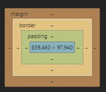

Notes:
- Margin and Padding
- Margin is the outside of the element
- Padding is the inside of the element
- You can change margin by using - margin: 0;

- CSS Reset - resets ALL margin and padding witin the designated area.
* {
margin: 0;
padding: 0;
} - If resetting the entire element, You MUST use margin and padding setting as default are cleared
- You may also use padding on specified sides
- Property order matters if using shorthand method to set padding / margin
- /* Padding Shorthand = top, right, bottom, left*/
- EXAMPLE:
padding: 10px 20px 10px 20px; - /* Padding shorthand top/bottom left/right */
- EXAMPLE:
padding: 10px 20px;

*** This applies to both Padding and Margin ***
- Property Order
- Duplicate properties which are further down the list override the ones higher up the list